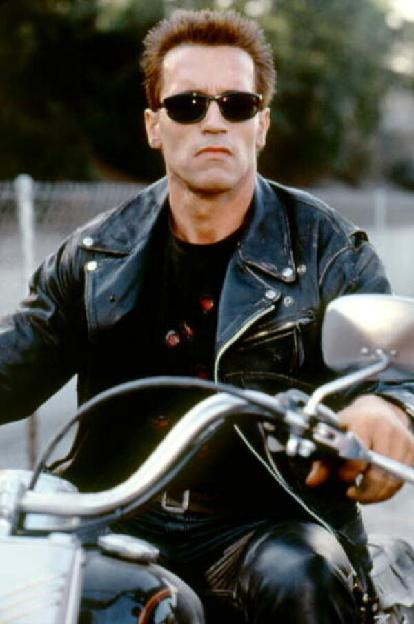
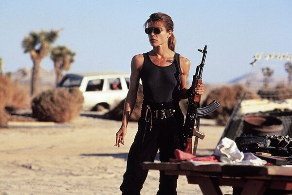
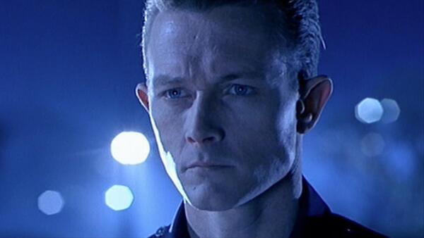

L'histoire
En 1997, les survivants de l'apocalypse nucléaire poursuivent une guerre sans merci contre les robots et machines qu'ils ont eux-même créés. Pour en finir avec John Connor qui dirige la résistance des hommes, deux "cyborgs" sont envoyés dans le passé. Leur mission : abattre Connor enfant. Le premier modèle de la série "Terminator" a échoué en 1984. Le second, modèle plus performant en liquide métamorphosable, se lance à la poursuite de l'enfant et de sa mère, Sarah, dans les années quatre-vingt-dix. De leur côté, les hommes du futur ont envoyé dans le passé un Terminator chargé de protéger le jeune Connor. Le duel des robots va prendre alors des allures titanesques. Et, tandis que l'enfant enseignera à ce Terminator des rudiments d'humanité, sa mère tentera par tous les moyens d'empêcher la création des premières machines intelligentes. Avec l'aide du Terminator qu'ils ont éduqué, ils combattront pour influencer le futur...
Les personnages
John Connor
Terminator
Sarah Connor
Le t1000
Box-Office
Le film récolte 31 765 506 $ au cours de son premier week-end d'exploitation aux États-Unis, pour un total combiné de 52 306 548 $, diffusé dans 2 274 salles43. Il occupe la tête du box-office pendant quatre semaines en ayant engrangé 139 125 779 $ et n'a pas été distribué au-delà de 2 495 salles44. En définitive, Terminator 2 : Le Jugement dernier rapporte 204 843 345 $ au box-office américain44. À l'étranger, il obtient également un fort succès commercial, en rapportant 315 000 000 $, pour un total de 519 843 345 $44, ce qui lui permet d'être le plus grand succès au box-office américain et mondial de l'année 1991, devant Robin des Bois : Prince des voleurs45,46. En 2017, lors de sa ressortie en 3D, le film engrange 1 037 809 $ sur le territoire américain et 2 893 302 $ à l'étranger47. Le film est également un succès en France, où il démarre avec 1 708 421 entrées en première semaine et prend la première place du box-office parisien durant quatre semaines48, pour finir son exploitation avec 6 118 250 entrées, dont 1 210 175 sur Paris, ce qui en fait le meilleur film de Schwarzenegger sorti en France48. Lors de sa ressortie en 3D en 2017, Terminator 2 totalise 10 853 entrées4